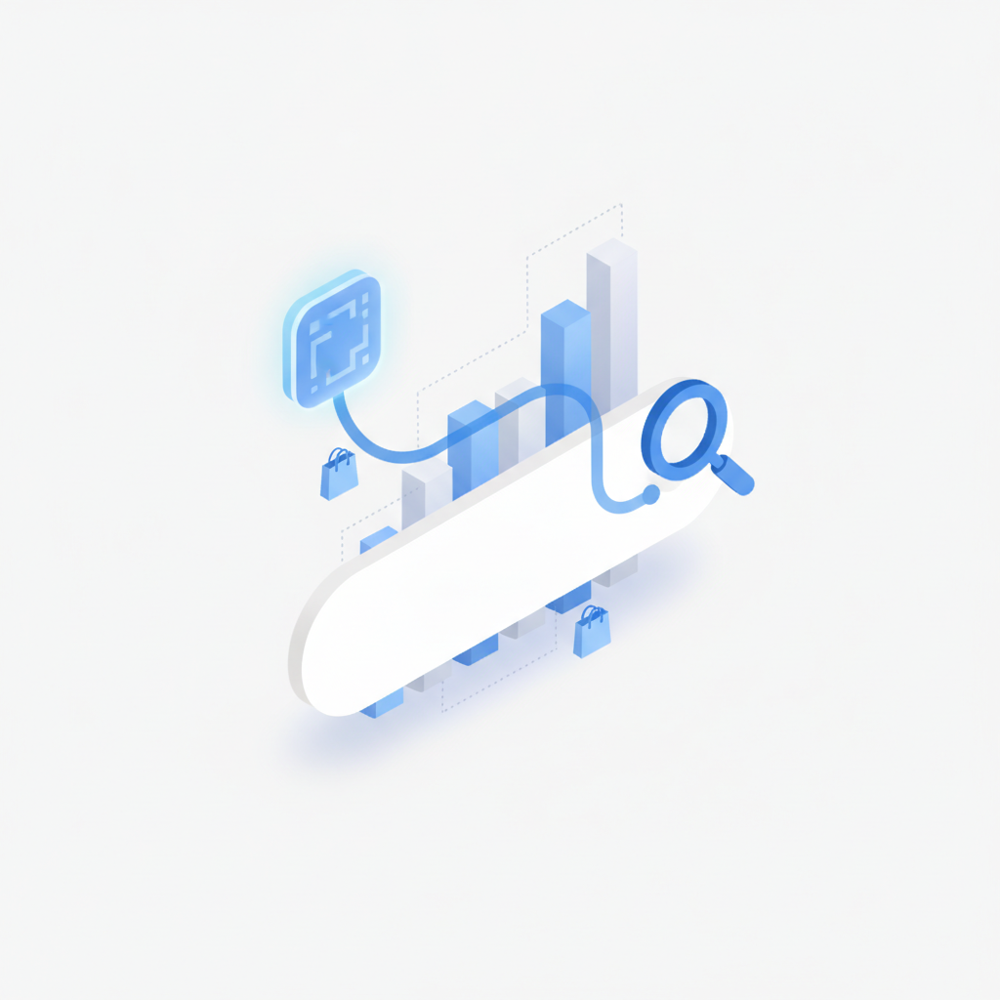
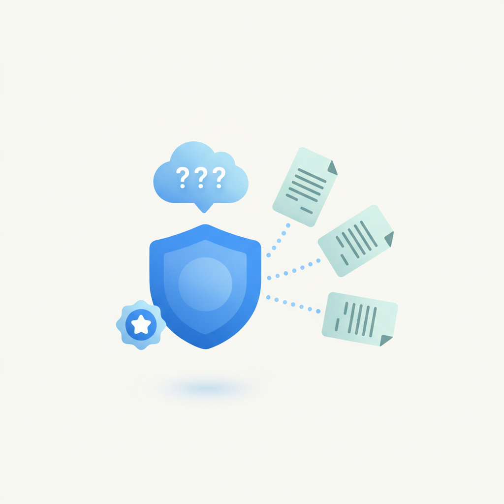
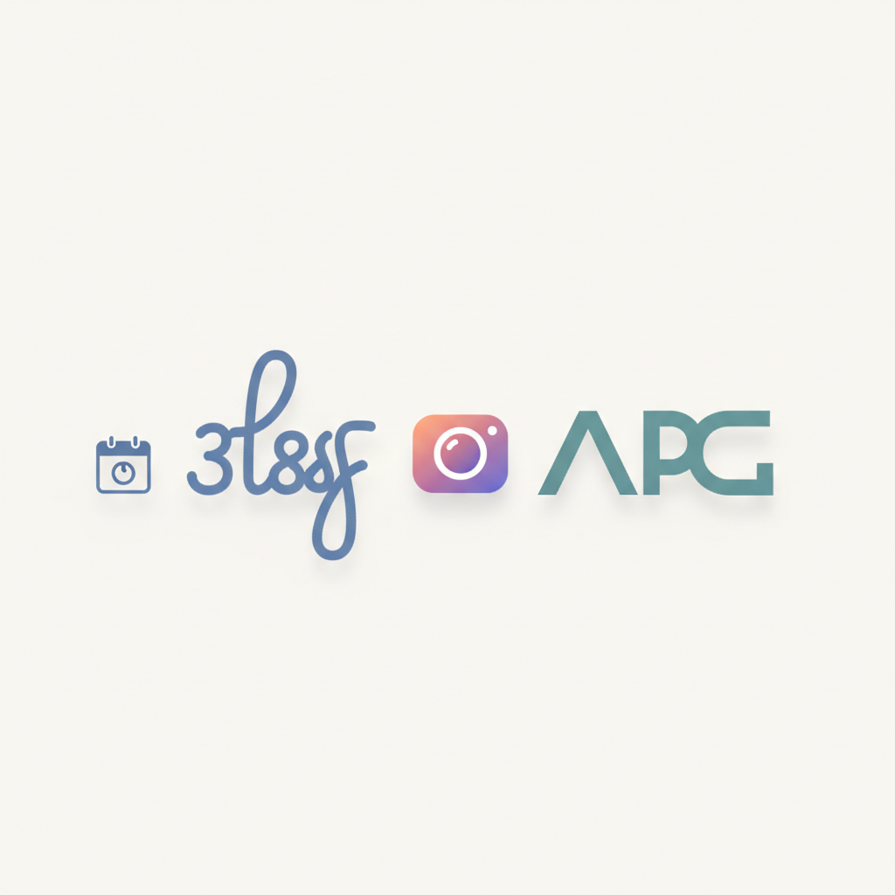
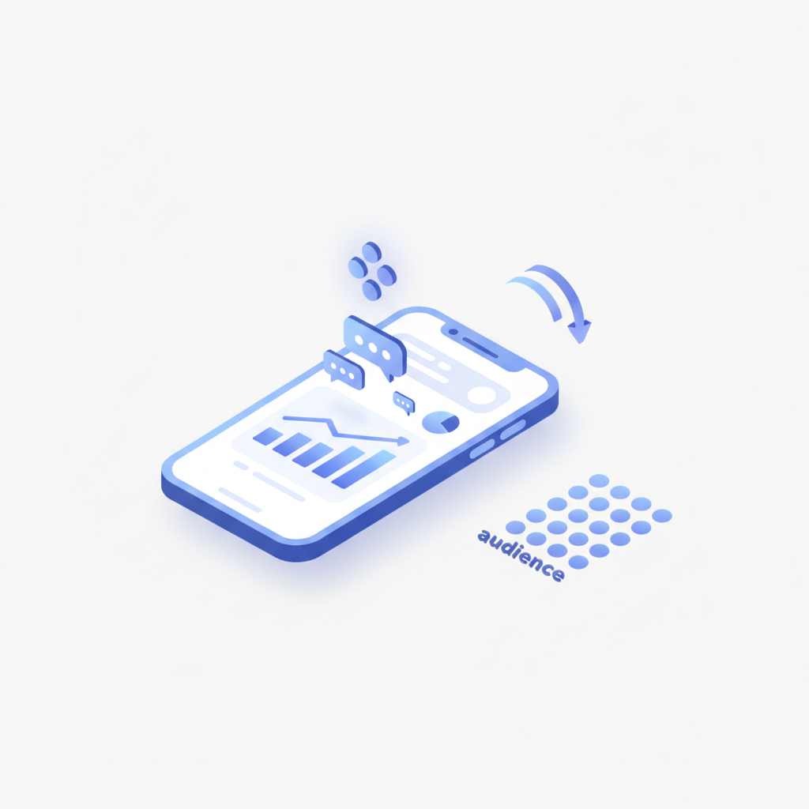
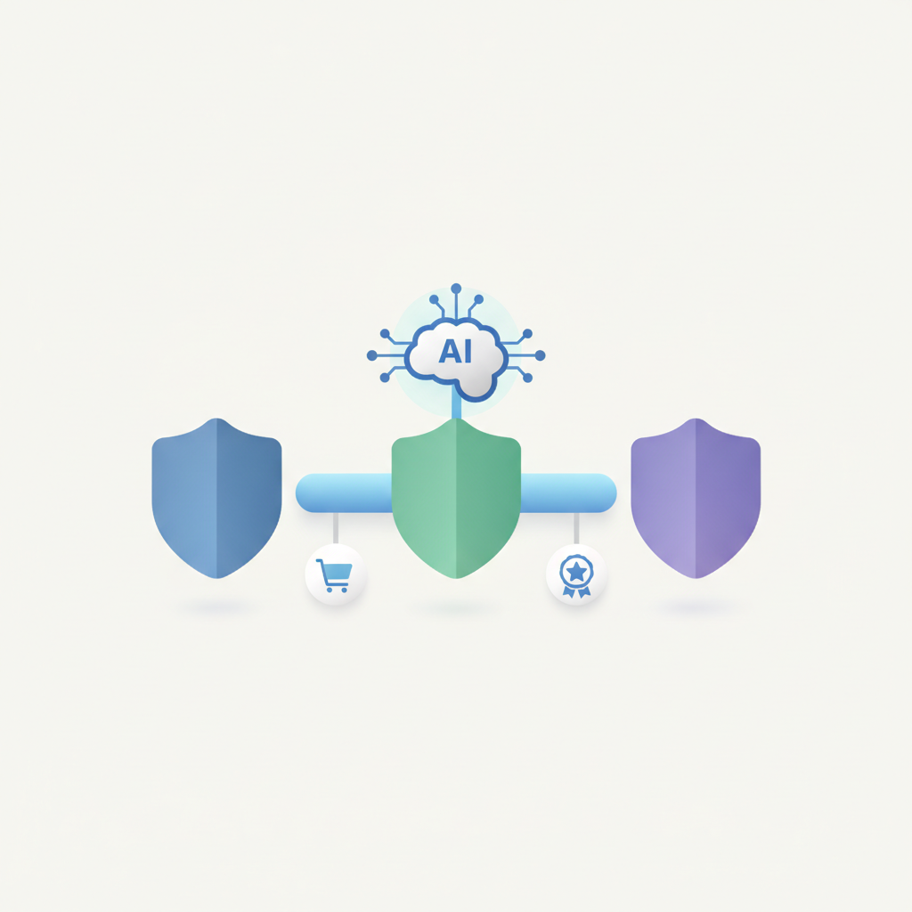
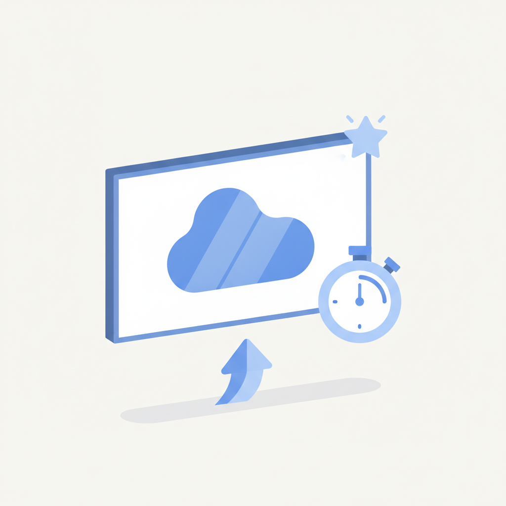
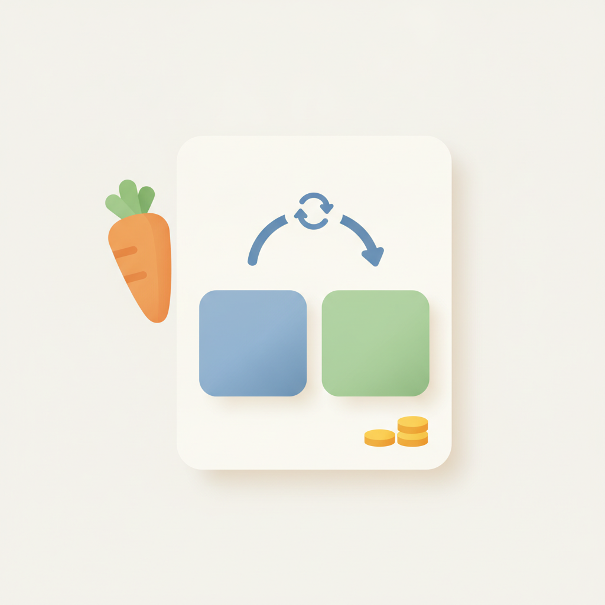
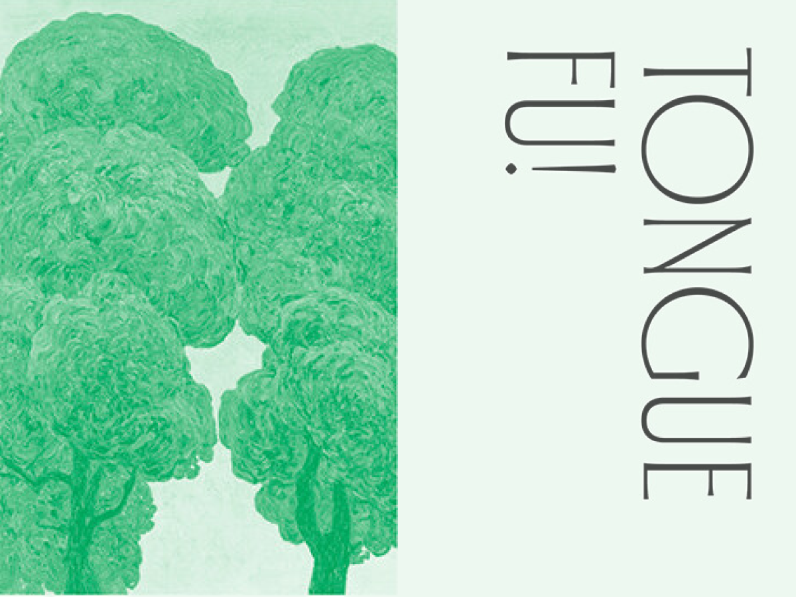

안녕하세요! 월요일 마케팅 소식 전해드립니다 😊 오늘은 인스타그램의 워드마크 변경 소식이 화제입니다. 2016년부터 10년간 이어온 필기체 스타일을 벗어나 보다 간결하고 현대적인 형태로 바꾼 것인데요, 브랜드 아이덴티티에서 '덜어내는 결정'이 얼마나 큰 용기를 필요로 하는지를 다시 생각하게 해주는 사례입니다. 쌓아온 것을 지키기보다 시대 흐름에 맞춰 재정의하는 선택, 브랜드 리뉴얼을 고민 중이라면 좋은 참고점이 될 것입니다.
롱블랙에서는 '적을 만들지 않는 대화법'을 다룹니다. "맞아, 넌 원래 그런 애였지"처럼 가볍게 던져진 말 한마디가 관계에 얼마나 깊은 균열을 만드는지, 그리고 그 상황을 어떻게 풀어갈 수 있는지를 짚어줍니다. 마케터에게 커뮤니케이션은 곧 업무 그 자체인 만큼, 브랜드 메시지뿐 아니라 조직 안팎의 대화 방식을 돌아보는 계기로도 충분히 활용할 수 있는 아티클입니다.
마케팅 뉴스에서는 AI 검색이 이커머스 유입 경로를 빠르게 재편하고 있다는 흐름도 확인할 수 있습니다. 쇼피파이 데이터 기준 AI 플랫폼 유입 세션이 전년 대비 197% 증가한 만큼, 키워드 중심의 기존 SEO에서 고객의 질문 자체를 다시 설계하는 방향으로 브랜드 전략을 점검해볼 타이밍입니다. 이번 주도 좋은 인사이트 가득 챙기시길 바랍니다! 🚀

1쇼피파이의 2026년 2분기 데이터에 따르면 AI 플랫폼을 통한 방문 세션이 전년 동기 대비 197% 증가했고 주문도 약 3배 늘었다. 그러나 오가닉 검색도 동시에 성장해 AI가 기존 검색을 대체하는 것이 아니라 소비자들이 두 채널을 다른 방식으로 병행 활용하고 있다는 분석이다. 이커머스 마케터는 SEO와 AI 검색 최적화를 동시에 운영하는 투트랙 전략이 필요한 시점이다.
›
2AI 검색이 새로운 고객 유입 경로로 부상하면서 브랜드 전략도 달라지고 있다. 기존 SEO가 키워드·노출 중심이었다면 AI 검색에서는 브랜드 정보의 정확성과 신뢰도가 추천에 영향을 미친다. 크리에이티브 에이전시 스비아지는 최근 3개월간 AI 검색 추천으로만 신규 프로젝트 3건을 수주했다고 밝혀, 마케터는 AI가 자사 브랜드를 어떻게 이해하고 설명하는지 점검할 필요가 있다.
›
3인스타그램이 2016년부터 사용해온 필기체 스타일 워드마크를 10년 만에 보다 간결하고 현대적인 형태로 교체했다. 아담 모세리 책임자는 10년간 변화 없이 사용된 만큼 새롭게 다듬을 시점이었다고 설명했으며, 분홍·주황·보라색 그라디언트 앱 아이콘은 그대로 유지한다. 인스타그램을 광고·콘텐츠 채널로 활용하는 마케터는 비주얼 가이드라인 및 브랜드 소재에서 새 워드마크 적용 여부를 확인해야 한다.
›
4페이스북이 크리에이터의 콘텐츠 운영과 커뮤니티 관리를 AI로 지원하는 독립형 앱 '크리에이터 스튜디오'를 미국·캐나다 iOS 크리에이터 전체로 확대 출시했다. 핵심 기능인 '크리에이터 어시스턴트'는 콘텐츠 스타일·성과·오디언스 반응·목표 등을 분석해 개인별 운영 방향을 제안한다. 페이스북을 브랜드 콘텐츠 채널로 운영하는 마케터에게 성과 분석과 댓글 관리 효율화 도구로 활용 가능성이 높다.
›
5미국 전미광고주협회(ANA), 미국광고대행사협회(4As), 인터랙티브광고협회(IAB)가 AI 거버넌스 및 도입을 위한 범업계 협력을 공식화했다. 세 단체는 AI 외에도 커머스·리테일 미디어, 인재 개발을 공동 과제로 선정하고 업계 공통 기준과 체계 마련에 나선다. 글로벌 광고 업계의 AI 표준화 움직임이 본격화되는 만큼 국내 마케터도 관련 가이드라인 동향을 주시할 필요가 있다.
›
6디지털 옥외광고(DOOH)는 약 1초의 능동적 주목만으로도 브랜드 기억과 매출에 측정 가능한 효과를 낼 수 있다는 연구 결과가 나왔다. 일반 디지털 광고의 효과 발생에 필요한 2.5초보다 훨씬 짧은 시간이다. 단, 짧은 주목을 성과로 연결하려면 강력한 크리에이티브와 한눈에 알아볼 수 있는 명확한 브랜딩이 필수적이라는 점이 마케터에게 중요한 시사점이다.
›
7AB180의 광고 성과 측정 솔루션 에어브릿지가 MMP 중 최초로 당근 광고비 연동을 지원하기 시작했다. 이 기능을 통해 당근 캠페인의 광고비 데이터를 자동으로 불러와 ROAS, CPA 등 주요 지표를 빠르고 정확하게 파악할 수 있다. 당근을 퍼포먼스 마케팅 채널로 활용하는 마케터라면 데이터 기반 캠페인 최적화 효율이 높아질 전망이다.
›
오랜만에 나간 주말 모임, 친구에게 이런 말을 들었어요. “맞아, 넌 원래 그런 애였지.” 그냥 웃어넘기기엔 불편했어요. 그렇다고 “그런 게 뭔데?”라며 받아치자니, 분위기를 깰 것 같았죠.
아티클 읽기 →브랜드 진단부터 지금 당장 해야 할 우선순위까지,
30분 무료 상담에서 함께 정리해드려요.
이미 수십 개 브랜드가 상담받았습니다.
내 브랜드처럼, 함께 고민하는 팀원의 마음으로 봅니다.
스타트업 대표·마케팅 담당자를 위한 30분